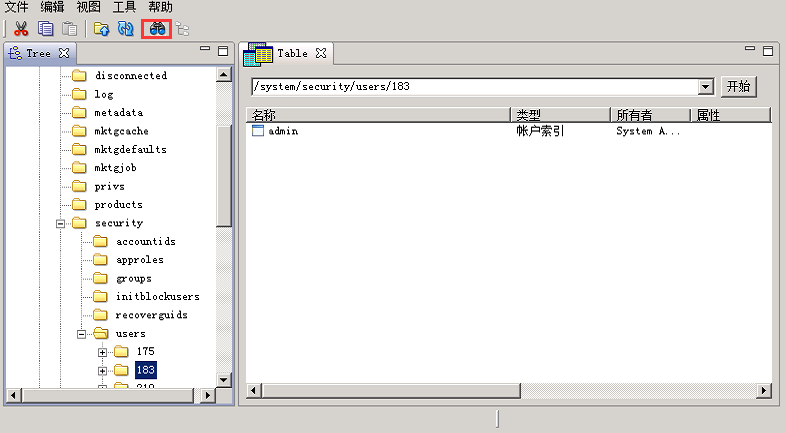
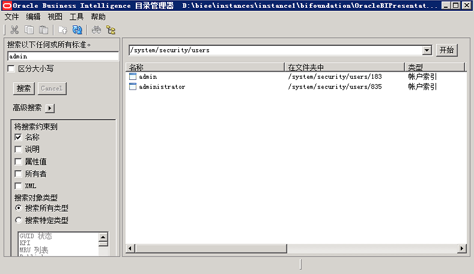
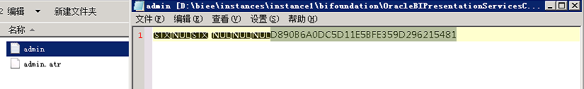
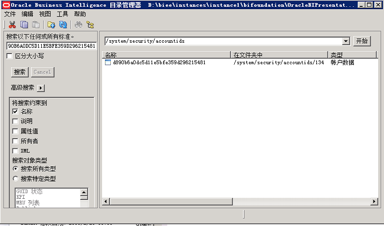

系统版本
- 系统版本：11G（11.1.1.9）
问题描述
将系统数据（RPD、catalog等数据）迁移到另一环境（版本同样为11G）后，老系统weblogic控制台中添加的账户在新系统（仪表盘）中无法登陆。但是可以登录FMC及weblogic控制台。
解决方法
- 打开“目录管理器”
- “文件”菜单“打开目录”，“类型”选择“脱机”，路径定位到当前的catalog目录
- 目录定位到“/system/security”
 - 点击上图“搜索按钮”，输入用户名，如下图
 - 记录下文件夹编号，如“admin”用户的文件夹“183”
- 进入catalog目录对应的文件夹（“{BI_ROOT}\instances{instance1}\bifoundation\OracleBIPresentationServicesComponent{coreapplication_obips1}\catalog\CUBI\root\system\security\users\183”），用记事本打开“admin”文件（非admin.atr）。
 - 将该文件中可识别的字符串复制到“目录管理器”中的搜索框。
 - 将搜索出的文件及所在文件夹删除（在“目录管理器中”删除）
- 打开“BI管理”进入档案资料库（联机），选择“管理”，“身份”。在弹出的 Identity Manager中，右键该用户选择“删除引用”。
- 无须重启系统或组件。即可使用该账号登陆BI仪表盘。